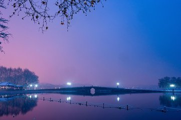
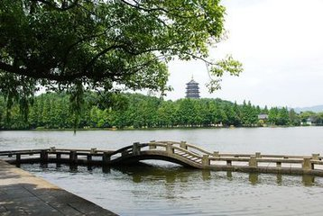
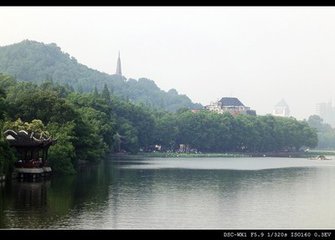

杭州————人间天堂
杭州，简称杭，浙江省省会，位于中国东南沿海、浙江省北部、钱塘江下游、京杭大运河南端，是浙江省的政治、经济、文化和金融中心，中国七大古都之一，中国重要的电子商务中心之一。
杭州以风景秀丽著称，素有“上有天堂，下有苏杭”的美誉。市内人文古迹众多，西湖及其周边有大量的自然及人文景观遗迹。杭州是吴越文化的发源地之一，历史文化积淀深厚。其中主要代表性的独特文化有良渚文化、丝绸文化、茶文化、以及流传下来的许多故事传说成为杭州文化代表。
杭州西湖
西湖三怪：断桥不断

西湖三怪：长桥不长

西湖三怪：孤山不孤
